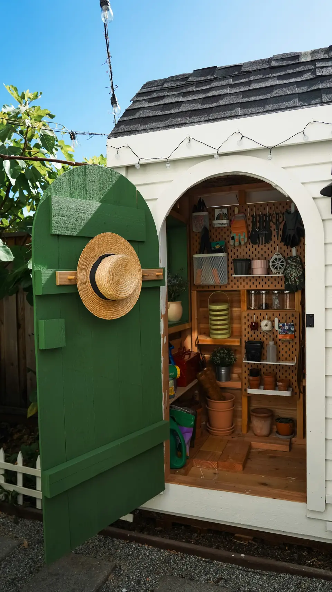
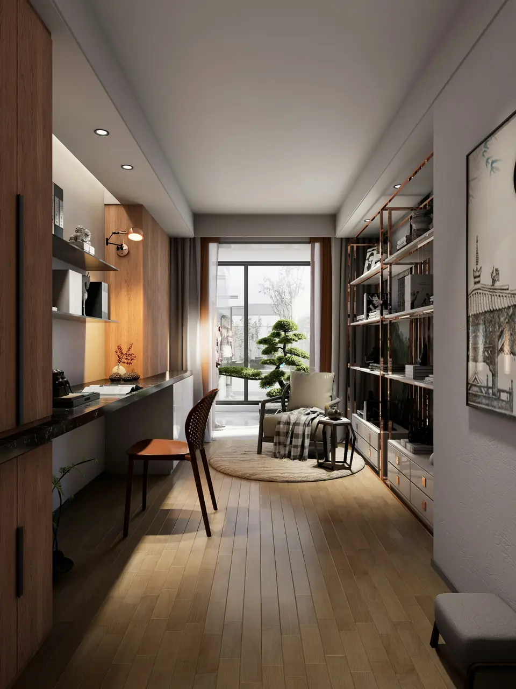
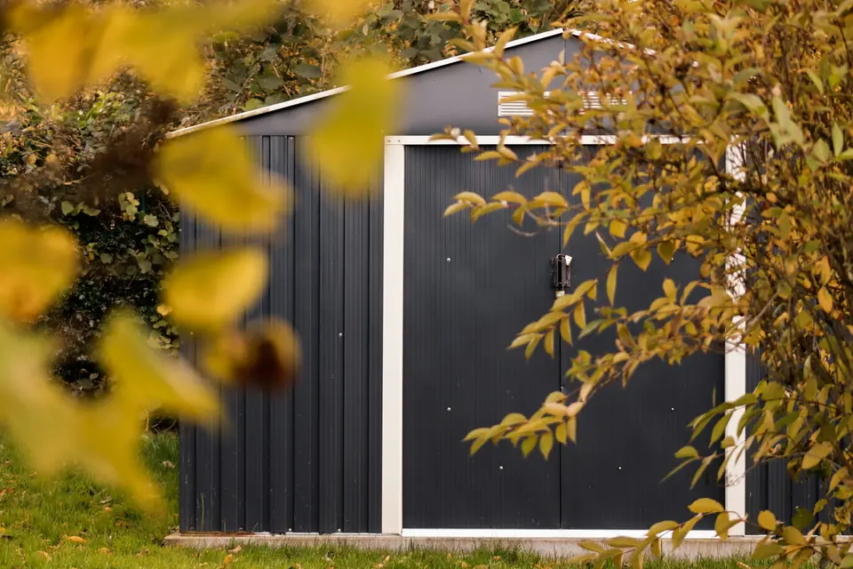
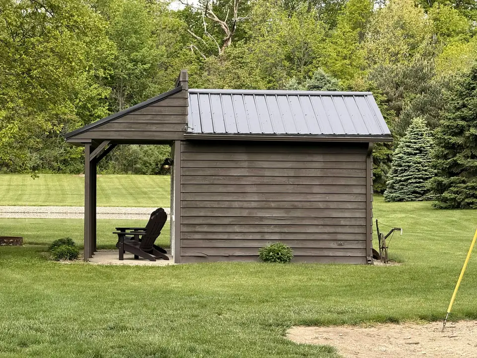
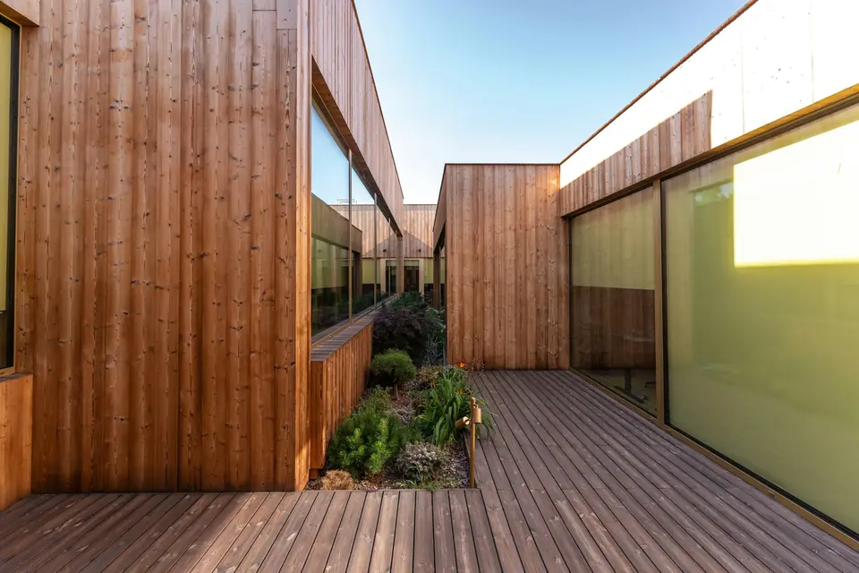

Galleria
Sally, dentro e fuori
Progetti, ambienti e ispirazioni: guarda come una casetta da giardino può diventare studio, laboratorio o rifugio.
-
 (apri ingrandimento)
(apri ingrandimento)
01 Esterno -

(apri ingrandimento)02 Interno con porta -

(apri ingrandimento)03 Interno completo -

(apri ingrandimento)04 In giardino, da vicino -

(apri ingrandimento)05 In giardino, vista larga -

(apri ingrandimento)06 Spazio esterno


Le foto mostrano ambienti di ispirazione. Prova i colori nel configuratore.